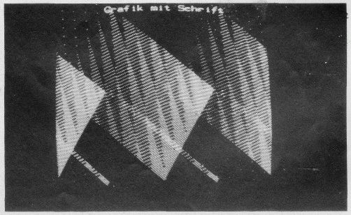

Nascom Journal |
4/80 |
Idee: Albert Schunk, München
Hochauflösende Grafik gehört für den Computer-Hobbyisten zu den komfortablen Dingen. Wer die höheren Weihen der Computerei nicht genossen hat, wird nie zu solchen Möglichkeiten kommen ???
Weit gefehlt ! Inzwischen gibt es eine Schwarz-Weiß-Graphikkarte, die Albert Schunk an seinen Nascom angeschlossen hat. Diese Karte ist fertig aufgebaut und getestet und kostet 698.–+MWSt. Albert Schunk hat auch ein Software-Paket geschrieben, das ASCII-Zeichen darstellen und Graphik darstellen kann. Auch beides gemischt. Es gibt eine Schachgraphik und ein Programm, das 30 Zeilen ASCII mit je 25 Zeichen darstellt. Einen Eindruck von der Qualität der Darstellung gibt die folgende Seite mit Fotographien von Bildschirmdarstellungen.
Die Graphik können Sie zusammen mit Steuersoftware und einem Schaltungsvorschlag (Anschluß an den NASBUS) bei M K – Systemtechnik beziehen. Bei genügendem Interesse könnten wir die Software auf einem EPROM liefern.
Die Fotos auf Seite 15 sind deshalb nicht so toll, weil es sich um ein Farbfernsehgerät handelt, das einerseits Verzerrungen und andererseits Unschärfen durch die Schlitzmaske ins Bild bringt.
| Seite 14 von 20 |
|---|